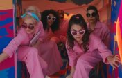

Hi, this is America Ferrera



Ferrera, the youngest of six children, was born in Los Angeles, California. Her parents, América Griselda Ayes and Carlos Gregorio Ferrera, were originally from Tegucigalpa, Honduras, and immigrated to the United States in the mid-1970s. Her mother worked as the director of the the housekeeping department for Hilton hotels.
at El Camino High School, she took acting lessons. She entered the University of Southern California (USC) on a presidential scholarship, double-majoring in theatre and international relations. She dropped out to focus on her acting career, but completed her bachelor's degree in May 2013.